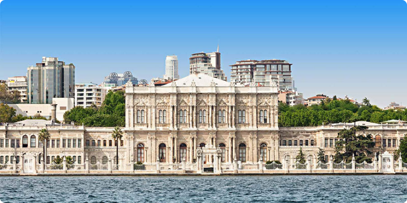

Маршрут:
Маршрут:
Стамбул - Памуккале - Анталія - Троя - Ефес - Кушадаси
1 день
Стамбул
Приліт у Стамбул. Трансфер з аеропорта в готель, розміщення. Вільний час, знайомство та зустріч з гідом. Вечеря (за доп. плату)

2 день
Стамбул
Вранці виїзд з готелю. Екскурсія по Стамбулу, з відвідуванням Блакитної Мечеті, площі Іподрому. Залежно від робочих днів музеїв - відвідування Палацу Топкапи або Собору Святої Софії. (Бажаючі за додаткову плату можуть здійснити прогулянку на яхті по Босфору).
Блакитна мечеть
Це найбільший шедевр не тільки ісламської і світової архітектури. Мечеть розташовується в історичному центрі міста на березі Мармурового моря. Блакитна мечеть - один із символів Стамбула.
Площа Іподрому
Іподром є одним з найстаріших куточків Стамбула. Тут вам зустрінеться чимало унікальних об'єктів, вік яких налічує вже не одне тисячоліття! На цій площі вишикувався цілий парад старожитностей, привезених з різних частин світу.
Палац Топкапи
Розкішний і монументальний, величний Палац Топкапи (інша назва - Гарматні ворота) довгий час був головною резиденцією багатьох турецьких султанів. Саме його стіни бачили неземну пристрасть Сулеймана Пишного і його наложниці Роксолани.
Собор Святої Софії
В історичному центрі Стамбула, в Султанахмет, височить собор Святої Софії. Ось уже понад тисячу років він є символом міста і знаменитим пам'ятником візантійського зодчества, а з 1985 року і частиною Всесвітньої спадщини ЮНЕСКО.
Показати ще
Чарівна Каппадокія

Туреччина - «Ворота Європи та Азії», країна, яка з'єднує Схід і Захід, сучасність і минуле. Це можливість поринути в східний світ казок і відкрити для себе унікальні пам'ятки.